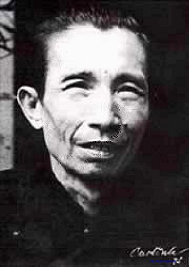

Tiểu Sử Tác Giả

.Vũ Hoàng Chương (5 tháng 5 1916 – 6 tháng 9 1976) là một nhà thơ nổi tiếng trong trào lưu thơ mới ở Việt Nam. Ông sinh tại Nam Định, nguyên quán tại làng Phù Ủng, huyện Đường Hào, phủ Thượng Hồng, nay là huyện Mỹ Hào tỉnh Hưng Yên. Thơ ông sang trọng, có dư vị hoài cổ, giàu chất nhạc, với nhiều sắc thái Đông phương.
Thuở nhỏ, ông theo học chữ Hán tại gia đình, học tiểu học tại Nam Định. Năm 1931 vào học trường Albert Sarraut ở Hà Nội, đỗ Tú tài năm 1937.
Năm 1938 ông vào Trường Luật nhưng chỉ được một năm thì bỏ đi làm Phó Kiểm soát Sở Hỏa xa Đông Dương, phụ trách đoạn đường Vinh - Na Sầm.
Năm 1941, ông bỏ Sở hỏa xa đi học Cử nhân toán tại Hà Nội, rồi lại bỏ dở để đi dạy ở Hải Phòng. Trong suốt thời gian này, ông không ngừng sáng tác thơ và kịch. Sau đó trở về Hà Nội lập Ban kịch Hà Nội cùng Chu Ngọc và Nguyễn Bính. Năm 1942 công diễn vở kịch thơ Vân muội tại Nhà Hát Lớn và gặp gỡ Đinh Thục Oanh, chị ruột nhà thơ Đinh Hùng, thành hôn năm 1944.
Sau Cách mạng tháng Tám 1945, về Nam Định, diễn vở kịch thơ Lên đường của Hoàng Cầm. Kháng chiến toàn quốc nổ ra, đi tản cư cùng gia đình về Thái Bình, làm nghề dạy học. Đến 1950, gặp lúc quân Pháp càn đến, ruồng bắt cả nhà, hồi cư về Hà Nội, dạy toán rồi chuyển sang dạy văn và làm nghề này cho đến 1975.
Năm 1954, Vũ Hoàng Chương vào Sài Gòn, tiếp tục dạy học và sáng tác.
Năm 1959 được giải thưởng toàn quốc của chính quyền Việt Nam cộng hòa về tập thơ Hoa đăng. Trong năm này tham dự Hội nghị thi ca quốc tế tại Bỉ.
Năm 1964 tham dự Hội nghị Văn bút Á châu họp tại Bangkok. Năm sau, 1965 lại tham dự Hội nghị Văn bút quốc tế họp tại Bled, Nam Tư. Năm 1967, lại tham dự Hội nghị Văn bút quốc tế họp tại Abidjan, thủ đô Côte d'Ivoire.
1969-1973 là Chủ tịch Trung tâm Văn bút Việt Nam thuộc Việt Nam Cộng hòa. Năm 1972 đoạt giải thưởng văn chương toàn quốc của Việt Nam Cộng hòa.
Ngày 13 tháng 4 năm 1976, bị chính quyền giải phóng bắt tạm giam tại khám Chí Hòa. Bệnh nặng đưa về nhà một thời gian ngắn thì mất ngày 6 tháng 9 năm 1976 tại Sài Gòn.
[sửa] Các tác phẩm tiêu biểu
Các tập thơ:
Thơ say (1940)
Mây (1943)
Thơ lửa (cùng Đoàn Văn Cừ, 1948)
Rừng phong (1954)
Hoa đăng (1959)
Tâm sự kẻ sang Tần (1961)
Lửa từ bi (1963)
Ta đợi em từ 30 năm (1970)
Đời vắng em rồi say với ai (1971)
Chúng ta mất hết chỉ còn nhau (1973)...
Kịch thơ:
Trương Chi (1944)
Vân muội (1944)
Hồng diệp (1944)
 .
.